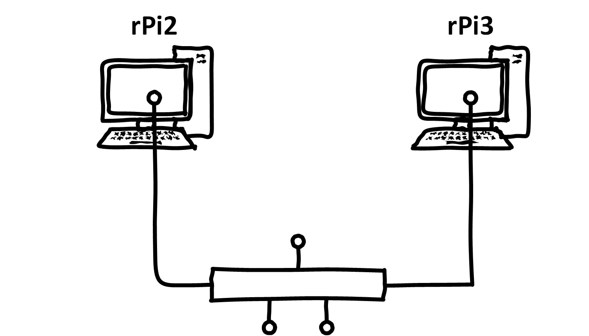

The overall goal of this lab. is to consolidate knowledge on IP addressing and subnets. This will be achieved using available networking tools in Linux to manage a simple Raspberry Pi network.
After this lab you will be able to:
Understand IP addresses and their organisation into subnets
Please read each exercise entirely before starting to solve it.
Remember you should deliver a report by the end of the semester. It should include the main commands and configurations necessary to complete each exercise. Do not forget to take notes while solving the exercises so you do not have to repeat them.
These exercises should be completed in teams.
Networking two Raspberry Pis

The main goal of this exercise is to create a simple network between two Raspberry Pi (rPi) devices through a simple Ethernet cable.
Initially you will have to connect one rPi at a time to keyboard and screen for configuring the necessary IP addresses and their masks. Afterwards you can use ssh if you need to change anything.
Configuring the network interfaces
Repeat these steps with each rPi, adjusting their addresses adequately.
Connect the keyboard, mouse and screen
Using the command ip addr show dev eth0 find out your current IP address, if any, on ‘eth0’
Type ip addr help to see all the available options
Add an IP address and respective mask to the interface ‘eth0’ using the command:
ip addr add <your_chosen_ip_here>/<chosen_mask> dev eth0
Using the command ip a s eth0 (same as in step 2 but shorter) verify your IP address, it should be the one you have just set.
You can use any private IP address in the ranges:
10.0.0.0/8
172.16.0.0/12
192.168.0.0/16
An example of a pair of IP addresses and masks could be “10.100.2.1/30” and “10.100.2.2/30”.
You need to have “root” privileges in order to change/add an IP address.
Verifying your configurations
After configuring the two rPi connect them to each other using a single Ethernet cable. Only one rPi needs to be connected to the keyboard/screen.
Use the command ip route to see the added route
Verify that both nodes have connectivity with the ping command
Make sure you can connect to the rPi without keyboard/screen using ssh
Use the command ping like this to generate only 4 ICMP messages.
ping -c4 <ip_address>
The ssh service may not be running, check with sudo systemctl status ssh. If it is not running use the systemctl command with start and with enable if you want ssh to start from boot.
Experimenting with masks
NEW
Remove any address that looks like 169.254.XXX.XXX/16 in both Raspberry Pis.
NEW
The goal of this task is to get more comfortable with subnets and masks. Start by configuring the rPi not connected to keyboard/screen:
Change the IP address to 10.10.10.30 using the mask 255.255.255.192 (first add a new address then delete the previous one)
Verify if you still have connectivity and discuss why or why not.
You may lose connectivity at this point depending on the IP address you have previously set on the rPi connected to the keyboard/screen.
Now, using the rPi connected to the keyboard/screen try the following:
Change the IP address to 10.10.10.4 using the mask 255.255.255.192 (first add a new address then delete the previous one)
Check for changes in connectivity between the two rPi
Using the same IP address change the mask to /30
Check for changes in connectivity between the two rPi
Using the same IP address, what is the smallest subnet size, and corresponding mask, that you can use to maintain connectivity between the two rPi? Why?
Experimenting with routes
Using the rPi connected to the keyboard/screen try the following:
Remove the existing route with ip route del <ip/mask> dev eth0
Check for changes in connectivity between the two rPi
Add a new route with the command ip route add with a “/30” mask
Static IP addresses
In order to permanently save IP configuration, so that they are persistent even after a reboot, you can edit the “dhcpcd.conf” file in /etc/. Edit this file and reboot to check the networking configurations have remained.
Change the topology you created in the previous exercise to use IPv6 addresses and try:
the ping command
remote access with ssh
different subnets
Remember to change the addresses in the remote rPi first or simply add the IPv6 address without modifying the IPv4 addresses you had earlier, instead of replacing.
In addition note that some commands require additional arguments to handle IPv6 (check their documentation).
More SSH
After configuring both devices, from the rPi with keyboard and screen, do the following:
Verify that both nodes have connectivity with the ping command
Connect to the other rPi using ssh with the option “-o ServerAliveInterval=5” and whatever else may be necessary
Before the previous command ends, remove the Ethernet cable from one of the rPi and wait for an error message (it should take less than 1 min.).
After the error message, reconnect the cable, re-establish the ssh session and verify if the command is still running using the ps command.
Repeat the “Alive” command in the remote rPi making sure it is not interrupted if the connection fails, and execute steps 4 and 5 again.
If a command such as ps outputs too much information you can use the Unix pipeline principles to manage the output. For example ps aux | grep desired_pattern.
To keep programs running even if there’s a connection interruption you can use the commands screen, tmux or simply run them on the background.
Final Steps
Learning Goals
In your double-team, reflect about what you learned today. Write a few sentences that capture (in your own words) what you learned and why it can be useful. Share these few sentences with everyone in the double-team. (You should use this text in the individual reflection below.)
Each team gets their own combination lock so you can store the box in the lockers in the lab.
The locks come opened and with the opening combination set.
Take a picture of that combination in your phone, so you remember it.
Do not attempt to change the code. (You do so by turning the locks opening 180 degrees and then setting them — don’t do that by accident.)
Cleaning Up
Put all hardware back into the box.
Store the box in one of the lockers in the lab, using the combination lock.
Connect all parts of the PC back to it (keyboard, mouse, monitor).
Take out any trash. (Even if its not yours… thank you!)
Put the chairs back to the table.
Individual Exercises
We recommend that you take some time to consider if there are any parts of this unit that you want to repeat individually, at your own pace. If you decide to do so, you have several options:
You have access to the hardware box at all times from the lockers. Just make sure everyone in your team knows where the box is, and put it back into the locker.
Install a Raspberry Pi Image on a Virtual Box in your PC. With this, you always have a Raspberry Pi with you.
Some of the Linux-related exercises also work on the Linux-PCs in the lab.